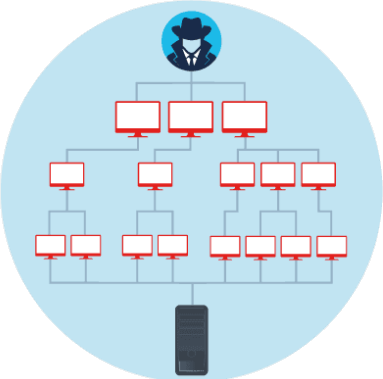
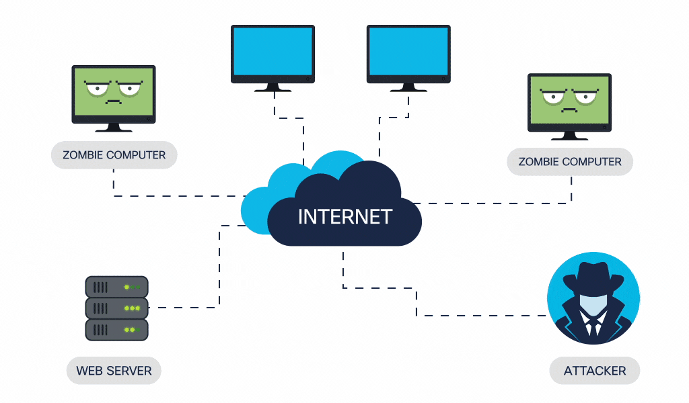
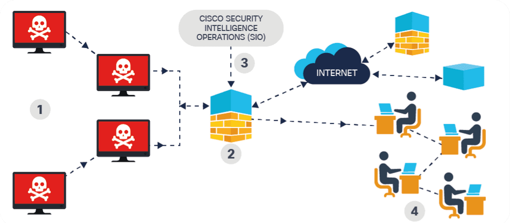
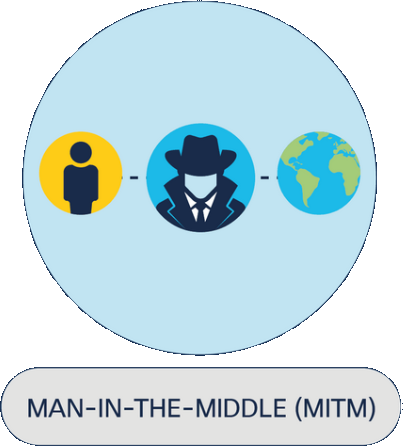
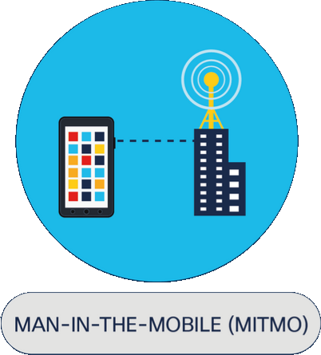
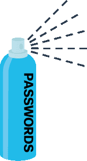
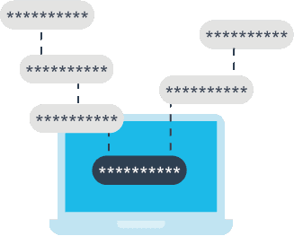

Explain the basics of being safe online, including what cybersecurity is and its potential impact.
Explain the most common cyber threats, attacks and vulnerabilities.
Explain how organizations can protect their operations against these attacks.
Access various information and resources to explore the different career options in cybersecurity.
Module 2 - Attacks, Concepts and Techniques
Welcome to this module, which will explore the different methods that cybercriminals use to launch an
attack
Understanding what these are and how they work is the best way to protect ourselves. So, let’s make sure
you know what you’re up against.
Chapter 2.2 - Methods of Infiltration
2.2.1 Social Engineering
Social engineering is the manipulation of people into performing actions or divulging confidential
information. Social engineers often rely on people’s willingness to be helpful, but they also prey
on their weaknesses. For example, an attacker will call an authorized employee with an urgent
problem that requires immediate network access and appeal to the employee’s vanity or greed or
invoke authority by using name-dropping techniques in order to gain this access.
Pretexting
This is when an attacker calls an individual and lies to them in an attempt to gain access
to privileged data.
For example, pretending to need a person’s personal or financial data in order to confirm
their identity.
Tailgating
This is when an attacker quickly follows an authorized person into a secure, physical
location.
Something for something (quid pro quo)
This is when an attacker requests personal information from a person in exchange for
something, like a free gift.
2.2.2 Denial-of-Service
Denial-of-Service (DoS) attacks are a type of network attack that is relatively simple to carry out,
even by an unskilled attacker. A DoS attack results in some sort of interruption of network service
to users, devices or applications.

Overwhelming quantity of traffic
This is when a network, host or application is sent an enormous amount of data at a rate
which it cannot handle. This causes a slowdown in transmission or response, or the device or
service to crash.
Maliciously formatted packets
A packet is a collection of data that flows between a source and a receiver computer or
application over a network, such as the Internet. When a maliciously formatted packet is
sent, the receiver will be unable to handle it.
For example, if an attacker forwards packets containing errors or improperly formatted
packets that cannot be identified by an application, this will cause the receiving device to
run very slowly or crash.
DoS attacks are considered a major risk because they can easily interrupt communication and cause
significant loss of time and money.
2.2.3 Distributed DoS
A Distributed DoS (DDoS) attack is similar to a DoS attack but originates from multiple, coordinated
sources. For example:
An attacker builds a network (botnet) of infected hosts called zombies, which are controlled by
handler systems.
The zombie computers will constantly scan and infect more hosts, creating more and more zombies.
When ready, the hacker will instruct the handler systems to make the botnet of zombies carry out
a DDoS attack.

Distributed DoS
2.2.4 Botnet
A bot computer is typically infected by visiting an unsafe website or opening an infected email
attachment or infected media file. A botnet is a group of bots, connected through the Internet, that
can be controlled by a malicious individual or group. It can have tens of thousands, or even
hundreds of thousands, of bots that are typically controlled through a command and control server.
These bots can be activated to distribute malware, launch DDoS attacks, distribute spam email, or
execute brute-force password attacks. Cybercriminals will often rent out botnets to third parties
for nefarious purposes.
Many organizations. like Cisco, force network activities through botnet traffic filters to identify
any botnet locations.

Botnet
Infected bots try to communicate with a command and control host on the Internet.
The Cisco Firewall botnet filter is a feature that detects traffic coming from devices
infected
with the malicious botnet code.
The cloud-based Cisco Security Intelligence Operations (SIO) service pushes down updated
filters
to the firewall that match traffic from new known botnets.
Alerts go out to Cisco’s internal security team to notify them about the infected
devices that
are generating malicious traffic so that they can prevent, mitigate and remedy these.
2.2.5 On-Path Attacks
On-path attackers intercept or modify communications between two devices, such as a web browser and
a web server, either to collect information from or to impersonate one of the devices.
This type of attack is also referred to as a man-in-the-middle or man-in-the-mobile attack.

A
MitM
attack happens when a cybercriminal takes control of a device without the
user’s knowledge. With this level of access, an attacker can intercept and capture user
information before it is sent to its intended destination. These types of attacks are often
used to steal financial information.
There are many types of malware that possess MitM attack capabilities.

A variation of man-in-middle,
MitMo
is a type of attack used to take control over a user’s
mobile device. When infected, the mobile device is instructed to exfiltrate user-sensitive
information and send it to the attackers. ZeuS is one example of a malware package with
MitMo capabilities. It allows attackers to quietly capture two-step verification SMS
messages that are sent to users.
There are a lot of ways for cybercriminals to infiltrate your systems and networks, but it’s
important that you know what these are.
2.2.6 SEO Poisoning
You’ve probably heard of search engine optimization or SEO which, in simple terms, is about
improving an organization’s website so that it gains greater visibility in search engine results.
So what do you think SEO poisoning might be?
Search engines such as Google work by presenting a list of web pages to users based on their
search query. These web pages are ranked according to the relevancy of their content.
While many legitimate companies specialize in optimizing websites to better position them,
attackers take advantage of popular search terms and use SEO to push malicious sites higher
up the ranks of search results. This technique is called SEO poisoning.
The most common goal of SEO poisoning is to increase traffic to malicious sites that may
host malware or attempt social engineering.
2.2.7 Wi-Fi Password Cracking
You’re enjoying your lunch in the canteen when a colleague approaches you. They seem distressed.
They explain that they can’t seem to connect to the public Wi-Fi on their phone and ask if you have
the private Wi-Fi password to hand so that they can check that their phone is working.
How would you respond?
This colleague could be carrying out a social engineering attack, manipulating you to provide the
password used to protect the organization’s private wireless network. You can never be too careful –
and, for answering correctly, you’ve earned some defender points. Well done!
Hackers have other techniques up their sleeves. Some use brute-force attacks, testing possible
password combinations to try and guess a password. Others are able to identify unencrypted passwords
by listening in and capturing packets sent on the network. This is called network sniffing. If the
password is encrypted, they may still be able to reveal it using a password cracking tool.
2.2.8 Password Attacks
Entering a username and password is one of the most popular forms of authenticating to a web site.
Therefore, uncovering your password is an easy way for cybercriminals to gain access to your most
valuable information.
Password spraying

This technique attempts to gain access to a system by ‘spraying’ a few commonly used
passwords across a large number of accounts. For example, a cybercriminal uses
'Password123' with many usernames before trying again with a second commonly-used
password, such as ‘qwerty‘.
This technique allows the perpetrator to remain undetected as they avoid frequent
account lockouts.
Dictionary attacks
A hacker systematically tries every word in a dictionary or a list of commonly used
words as a password in an attempt to break into a password-protected account.
Brute-force attacks

The simplest and most commonly used way of gaining access to a password-protected site,
brute-force attacks see an attacker using all possible combinations of letters, numbers
and symbols in the password space until they get it right.
Rainbow attacks
Passwords in a computer system are not stored as plain text, but as hashed values
(numerical values that uniquely identify data). A rainbow table is a large dictionary of
precomputed hashes and the passwords from which they were calculated.
Unlike a brute-force attack that has to calculate each hash, a rainbow attack compares
the hash of a password with those stored in the rainbow table. When an attacker finds a
match, they identify the password used to create the hash.
Traffic interception
Plain text or unencrypted passwords can be easily read by other humans and machines by
intercepting communications.
If you store a password in clear, readable text, anyone who has access to your account
or device, whether authorized or unauthorized, can read it.
2.2.9 Cracking Times
It looks as if the hackers are trying everything to crack @Apollo’s private Wi-Fi password. We have
to make sure that the password is strong enough to withstand their attack!
Take a look at the following passwords. Click the numbers to put them in the correct order according
to how long you think it would take an attacker to crack each one using brute-force, where 1 is the
shortest amount of time and 4, the highest.
Password
H$1gh#7iD@3
K4km9n2R
3trawberry
Footprinting through the network to find ways to intrude gives you a chance to gather the
information you need to plan a simulated attack.
Scanning a target allows you to identify potential exploitable weaknesses.
You will need to gain access to a network to exploit any vulnerabilities and simulate an
attack.
Maintaining access , without being detected, means that you can gather further
information on a
target’s vulnerabilities.
Your findings will be reported to the organization so that security improvements can be
made.
2.2.10 Advanced Persistent Threats
Attackers also achieve infiltration through advanced persistent threats (APTs) — a multi-phase, long
term, stealthy and advanced operation against a specific target. For these reasons, an individual
attacker often lacks the skill set, resources or persistence to perform APTs.
Due to the complexity and the skill level required to carry out such an attack, an APT is usually
well-funded and typically targets organizations or nations for business or political reasons.
Its main purpose is to deploy customized malware on one or more of the target’s systems and remain
there undetected.
2.2.11 It’s Over to You...
Phew! That’s a lot to take in and hackers certainly have a lot of tools at their disposal. It is
important that you know what these are so that you can protect yourself and @Apollo.
You think back to some of the suspicious activities that you’ve seen recently in the organization.
Based on what you have learned in this topic, what type of attack could each of these scenarios be?
Take your time with this one. You have a chance to earn some much-needed defender points.